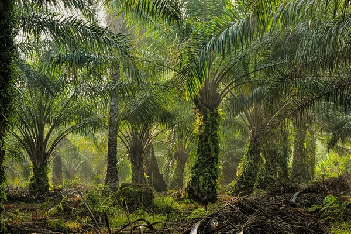

Selamat Datang di Sistem Pakar Tanaman Kelapa Sawit

Sistem ini dirancang untuk membantu petani kelapa sawit dalam mengidentifikasi dan menangani hama serta penyakit yang menyerang tanaman kelapa sawit. Dengan menggunakan sistem ini, petani dapat meningkatkan hasil panen dan kualitas minyak goreng yang dihasilkan.
Diagnosa Hama dan Penyakit
Identifikasi hama dan penyakit yang menyerang tanaman kelapa sawit dengan mudah dan cepat.
Pelajari Lebih LanjutInformasi Penyakit
Dapatkan informasi lengkap tentang berbagai penyakit yang dapat menyerang tanaman kelapa sawit.
Pelajari Lebih LanjutInformasi Hama
Ketahui lebih banyak tentang hama yang dapat merusak tanaman kelapa sawit dan cara penanganannya.
Pelajari Lebih Lanjut